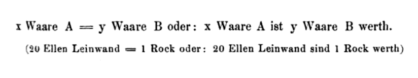
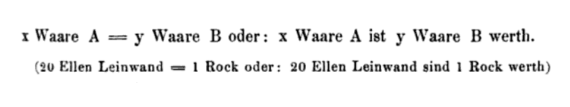
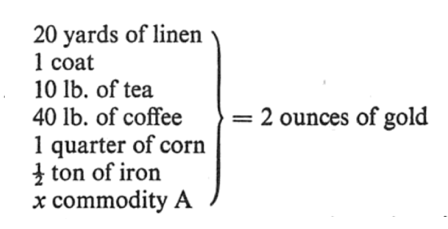
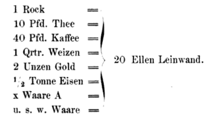
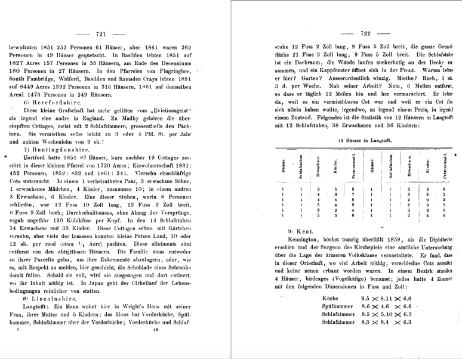

Marx's Gothic Data
Sierra Eckert
Columbia University
@sierraeckert | sierra.eckert@columbia.edu
NAVSA/AVSA NYU/Purdue 2017, Florence, Italy
x commodity A = y commodity B
M-C-M and C-M-C
Working Day I: A——B-C
Working Day II: A——B—C
Working Day III: A——B——C
Karl Marx, Capital, Vol.1, (1867)
This section incorporates, in my view, a lot of boring material that can all too easily mask the significance of the argument being made. Marx sometimes puts on, as I pointed out earlier, an accountant's hat, and the result is a form of exposition that can be tedious in the extreme: when this equals that and that equals this and this costs three pence and this fifteen, then the result is that something else is equivalent to . . . and so it goes, with the help of all manner of numerical illustrations to follow.
David Harvey, A Companion to Marx's Capital, 30 (referring to Capital, chapter 1, section 3: The Value-Form)
The social statistics of Germany and the rest of Continental Western Europe, are, in comparison with those of England, quite wretched. But they raise the veil just enough to let us catch a glimpse of the Medusa’s head behind it. We should be appalled at our own circumstances, if, as in England, our governments and parliaments periodically appointed commissions of inquiry into economic conditions; if these commissions were armed with the same plenary powers to get at the truth; if it was possible to find for this purpose men as competent, as free from partisanship and respect of persons as are England's factory-inspectors, her medical reporters on public health, her commissioners of inquiry into the exploitation of women and children, into the conditions of housing and nourishment, and so on. Perseus wore a magic cap so that the monsters he hunted down might not see him. We draw the magic cap down over our own eyes and ears so as to deny that there are any monsters.
Karl Marx, "Preface to the First Edition," Capital, Vol.1, 1867 (trans. Ben Fowkes), 91.
Now, however, we have to perform a task never even attempted by bourgeois economics. That is, we have to show the origin of this money form, we have to trace the development of the expression of value contained in the value-relation of commodities from its simplest, almost imperceptible outline to the dazzling money-form. When this has been done, the mystery of money will immediately disappear.
[...]
The whole mystery of the form of value lies hidden in this simple form.
Karl Marx, " Capital, Vol.1, 1867 (trans. Ben Fowkes), 139.
 

Marx, "Form A: The Simple, Isolated, or Accidental Form of Value"
Top to bottom: Capital Vol.1, 139; Das Kapital (1872), 23
 
Marx, "Form D: The Money Form"
Left to right: Capital Vol.1, 162, Das Kapital (1872) 46


Top to bottom: A (Einfache), B (Totale), C (Allgemeine), and D (Geld) Werthform, Das Kapital vol. 1, 23, 38, 41, 46


Top to bottom: A (Simple), B (Total), C (General), and D (Money) Form of Value, Capital vol. 1, 139, 154-5,157, 162

Marx, Das Kapital 721-722
Top to bottom, left to right:
Table D The Income Tax on Subjoined Income, in Pounds Sterling,
Table E: Schedule D Income from Profits (over 60 £) in Ireland,
Average Weekly Cost of Maintenance Per Head, Das Kapital 735, Capital Vol.1, 858, 859, 863

Marx, Housing data, detail Top, left to right: Lincolnshire, Das Kapital 722, Capital Vol.1, 846-847
Bottom: Kent Das Kapital 722, Capital Vol.1, 846-847

Top to bottom, left to right:
"Table D The Income Tax on Subjoined Income, in Pounds Sterling,"
"Table E: Schedule D Income from Profits (over 60 £) in Ireland,""
Left to right : Das Kapital 734-735, Capital Vol.1, 858-9
We saw from Table E that during 1864, out of a total profit of £ 4,368,610, three money-grubbers pocketed only £ 262,610. [...] But the lion's share of the yearly national rental which an inconceivably small number of land magnates in England, Scotland, and Ireland swallow up is so monstrous that English statesmanship finds it inappropriate to afford the same statistical materials about the distribution of rents as about the distribution of profits. Lord Dufferin is one of those land magnates. The rent-rolls and profits can ever be 'excessive' or that the plethora of rent-rolls and profits is in any way connected with the plethora of popular miseries, is of course, an idea as 'disreputable' as it is 'unsound'.
Marx, Capital Vol.1, 868
And, as appetite grows with eating, Rent Roll's eyes will soon discover that Ireland with 3 1/2 millions, still continues to be miserable, miserable because she is overpopulated.
Marx, Capital Vol.1, 869
These slides were made using reveal.js by Hakim El Hattab.
References
Brooks, Peter. The Melodramatic Imagination: Balzac, Henry James, Melodrama, and the Mode of Excess. Yale University Press, 1976. Print.
Botting, Fred. The Gothic:
Cvetkovich, Ann. “Marx’s Capital and the Mystery of the Commodity.” Mixed Feelings: Feminism, Mass Culture, and Victorian Sensationalism. New Brunswick, N.J: Rutgers University Press, 1992. Print.
Derrida, Jacques. Specters of Marx: The State of the Debt, the Work of Mourning and the New International. London: Routledge, 2012. Print.
Drucker, Johanna. “Graphesis: Visual Knowledge Production and Representation.” paj:The Journal of the Initiative for Digital Humanities, Media, and Culture 2.1 (2010): 150. Print.
Halberstam, Judith. Skin Shows: Gothic Horror and the Technology of Monsters. Duke University Press, 1995. Print.
Harvey, David. A Companion to Marx’s Capital. London; New York: Verso, 2010. Print.
Jameson, Fredric. Representing Capital: A Reading of Volume One. London, England; New York:Verso, 2014. Print.
Malthus, Thomas Robert. An Essay on the Principle of Population. Ed. Philip Appleman. New York:W WNorton & Co, 2003. Print.
Marx, Karl. Capital: A Critique of Political Economy. Trans. Ben Fowkes. Reprint edition. Vol. 1. London; New York, N.Y: Penguin Classics, 1992. Print. 3 vols.
—. Das kapital: Kritik der politischen oekonomic.Volume 1. Hamburg: Verlag von OttoMeissnar, 1872. Print. 3 vols.
Poovey, Mary. A History of the Modern Fact: Problems of Knowledge in the Sciences of Wealth and Society. Chicago: University of Chicago Press, 1998. Print.
Smith, Adam. The Wealth of Nations. Ed. Andrew Skinner. Harmondsworth, Middlesex; New York, N.Y.: Penguin Classics, 1982. Print.
Williams, Raymond. Politics and Letters: Interviews with New Left Review. London; New York: Verso, 1981. Print.